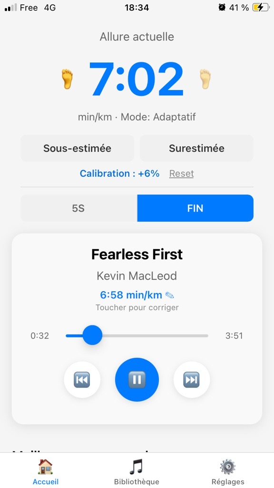
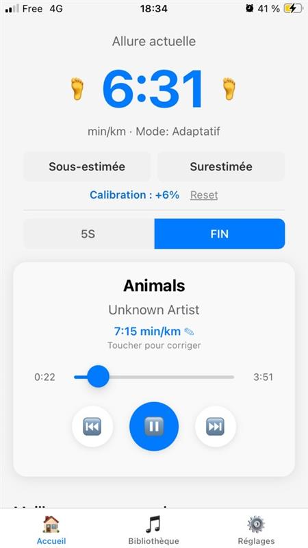

5s
Cinq secondes
Five seconds
Le mode par défaut. L’allure change ? L’app attend 5 secondes que ça se confirme, puis enchaîne en fondu.
The default. Pace shifts? The app waits 5 seconds to be sure, then crossfades.
BeatOnStep
Marche ou course. L’app détecte ton rythme et te propose un morceau à la bonne allure.
Walk or run. The app reads your cadence and puts on a track at the right tempo.
Android, sans pub. Alpha : invitation Play requise.
Android, no ads. Alpha: Play invite required.

Tu choisis comment l’app enchaîne quand ton allure bouge. Téléphone dans la poche, rien d’autre à porter.
You choose how the app switches when your pace shifts. Phone in your pocket — nothing else to wear.
5s
Le mode par défaut. L’allure change ? L’app attend 5 secondes que ça se confirme, puis enchaîne en fondu.
The default. Pace shifts? The app waits 5 seconds to be sure, then crossfades.
Fin
End
Le morceau va jusqu’à la fin. Le suivant est déjà calé sur ta nouvelle allure.
The track plays out. The next one already matches your new pace.
Immédiat
Instant
Dès que tu accélères ou tu ralentis, le titre change. Pour les allures qui bougent tout le temps.
As soon as you speed up or slow down, the track changes. For pace that never sits still.
